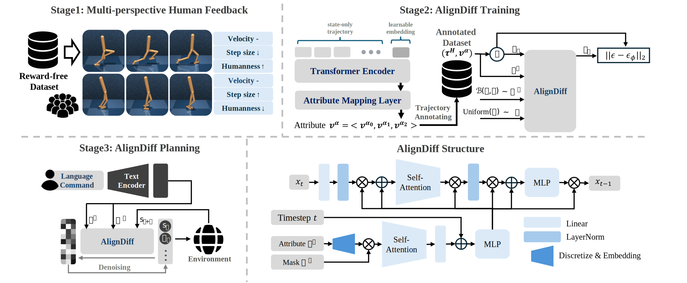
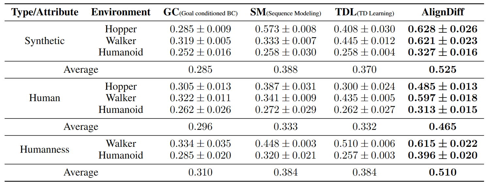
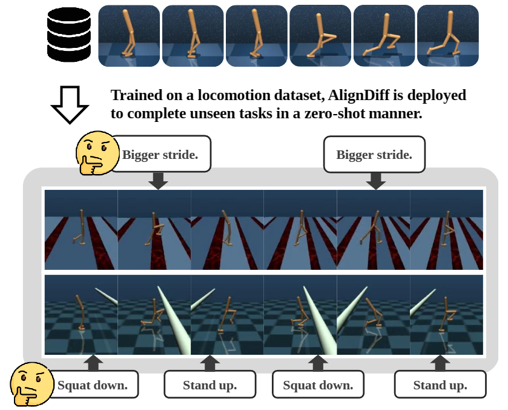
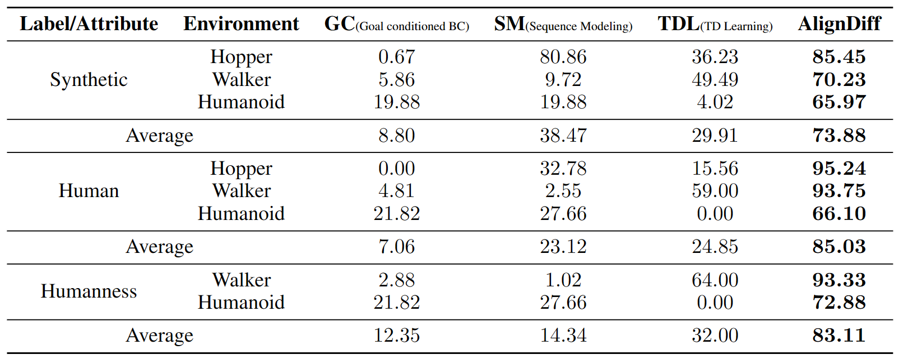

AlignDiff: Aligning Diverse Human Preferences via Behavior-customisable Diffusion Model
Abstract
Aligning agent behaviors with diverse human preferences remains a challenging problem in reinforcement learning (RL), owing to the inherent abstractness and mutability of human preferences. To address these issues, we propose AlignDiff, a novel framework that leverages RL from Human Feedback (RLHF) to quantify human preferences, covering abstractness, and utilizes them to guide diffusion planning for zero-shot behavior customizing, covering mutability. AlignDiff can accurately match user-customized behaviors and efficiently switch from one to another. To build the framework, we first establish the multi-perspective human feedback datasets, which contain comparisons for the attributes of diverse behaviors, and then train an attribute strength model to predict quantified relative strengths. After relabeling behavioral datasets with relative strengths, we proceed to train an attribute-conditioned diffusion model, which serves as a planner with the attribute strength model as a director for preference aligning at the inference phase. We evaluate AlignDiff on various locomotion tasks and demonstrate its superior performance on preference matching, switching, and covering compared to other baselines. Its capability of completing unseen downstream tasks under human instructions also showcases the promising potential for human-AI collaboration. More visualization videos are released on https://aligndiff.github.io/.
Method

Overview of AlignDiff. AlignDiff leverages RLHF to quantify human preferences and
utilizes them to guide diffusion planning for zero-shot behavior customizing. Firstly,
we collect multi-perspective human feedback through crowdsourcing. Secondly, we use this
feedback to train an attribute strength model, which we then use to relabel the behavioral
datasets. Thirdly, we train a diffusion model on the annotated datasets, which can understand
and generate trajectories with various attributes. Lastly, we can use AlignDiff for inference,
aligning agent behaviors with human preferences at any time.
Results
Matching performance
In each video, starting from the same initial state, a specific attribute is set to three different levels, 0.1, 0.5, and 0.9 (increasing from left to right). The video on the left is produced by AlignDiff, while the video on the right is produced by the baseline method.
Hopper - Jump height - A larger value indicates a higher jumping height. AlignDiff exhibits a significant disparity in jump heights across three levels, while the baseline shows an insignificant difference in heights and exhibits peculiar jumping postures.
Walker - Leg preference - A larger value indicates a preference for using the left leg, while a smaller value indicates a preference for using the right leg. A middle value indicates normal walking with both legs. AlignDiff demonstrates a clear preference for utilizing the left and right legs differently. In the left video, it relies on the right leg for walking, while in the middle video, it employs both legs simultaneously. In the right video, it relies on the left leg for walking. However, the baseline does not exhibit any behavioral variation in this regard.
Walker - Torso height - A larger value indicates a higher torso height. AlignDiff rapidly adjusts its behavior and exhibits noticeable differences in torso height. However, the baseline, although eventually showing height disparities as well, takes a significantly longer time to adapt its behavior.
Humanoid - Speed - A larger value indicates a faster movement speed. AlignDiff demonstrates significant differences in speed, while the baseline is unable to even perform the locomotion behavior.
We also conduct a quantitative evaluation of the matching performance. The performance scores of various algorithms are presented in the table below, where higher scores indicate stronger preference aligning capabilities. The establishment of quantitative metrics and the method of obtaining table data are described in the experimental section of the paper.

Switching performance
In the video, we adjust the preference for the speed attribute every 200 steps and visualize the tracking curve of the target attribute (ground truth). The video on the left is produced by AlignDiff, while the video on the right is produced by the baseline method. AlignDiff is able to track the ground truth more quickly and accurately.
We further test AlignDiff's zero-shot capability under human instructions by deploying it to unseen downstream tasks. By adjusting attributes such as speed, torso height, and stride length by the human instructor, the walker robot, which was only trained on locomotion datasets, successfully complete the gap-crossing and obstacle avoidance tasks

Covering performance

Covering distribution of AlignDiff and other baselines trained with human labels.
The x-axis represents relative attribute strength, and the y-axis represents
the corresponding actual attribute. The points (x, y) in the highlighted
region indicate that the algorithm is more likely to produce trajectories
with the actual attribute y given x as a condition. Comparing to the ground
truth (dataset distribution), AlignDiff is able to better cover the dataset
distribution and produce behaviors that are not present in the dataset
(intuitively, it can fill the gaps in the disconnected regions within the highlighted area).
Human evaluation

Results of human evaluation. We invite human evaluators to assess the behaviors
produced by the algorithm, with higher scores indicating stronger alignment with
human preferences. AlignDiff outperforms other baselines significantly. For detailed
information on the human evaluation, please refer to the experimental section of the paper.
Released behavioral & human feedback datasets
| Domain | Transitions | Feedbacks | Size(Behavioral datasets/Feedback datasets) | Link |
|---|---|---|---|---|
| Hopper | 5M | 1228 | 324M/42.7M | Download |
| Walker | 3.2M | 4000 | 1.19G/91.6M | Download |
| Humanoid | 2.5M | 4000 | 4.11G/875M | Download |